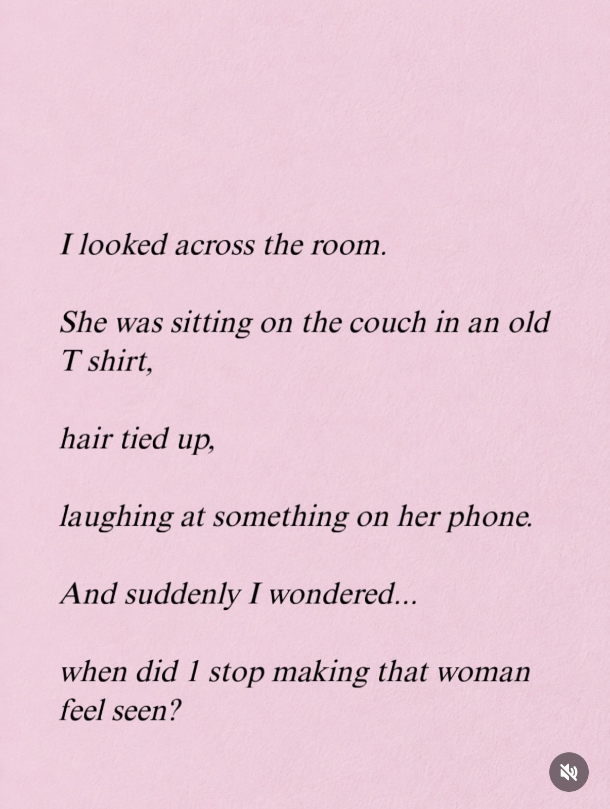
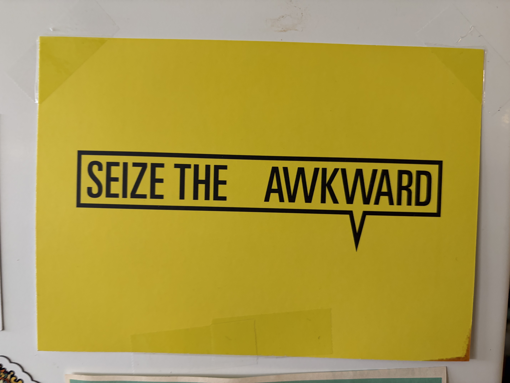
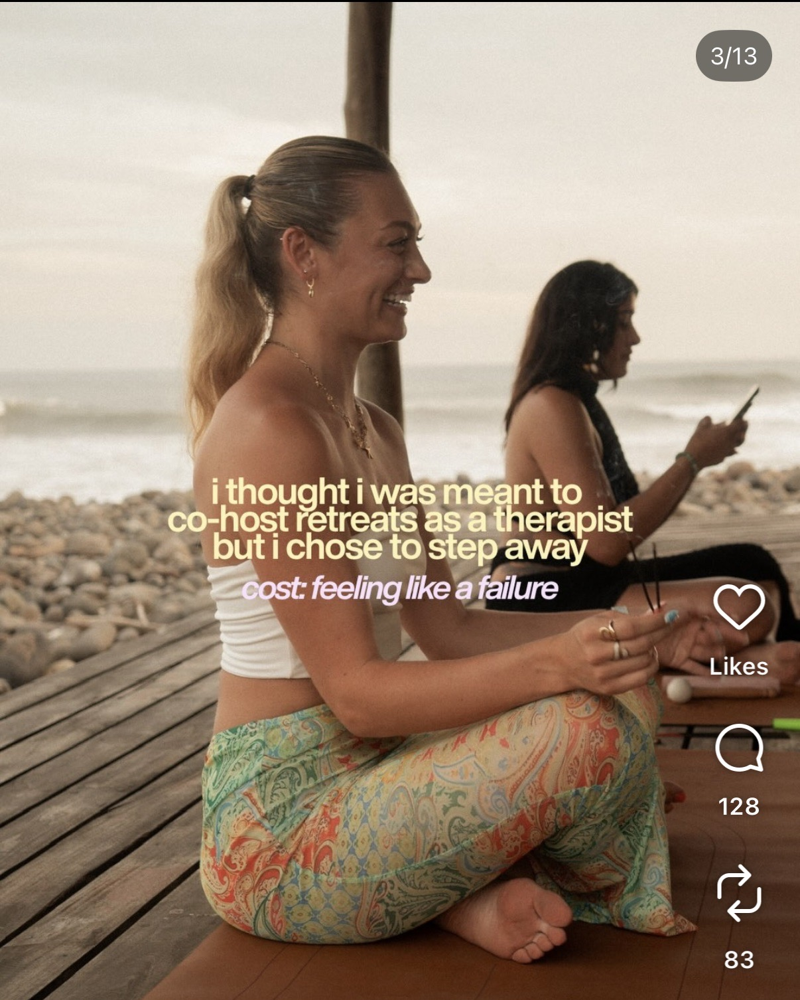

Expected vs. Actual Adulthood

This screenshot speaks to an outcome that could happen when a traditional milestone that says we have reached adulthood falls through.
My Screenshot Journal
Young adulthood has traditionally been framed as the point when you "figure out" who you are and establish an adult life. However, online spaces increasingly portray young adulthood as an ongoing process of becoming, where identity, career, relationships, family, and lifestyle remain uncertain and negotiable. I believe social media provides a space where young adults can collectively express, navigate, and make sense of that uncertainty.
I will capture publicly available media that communicates a disrupted expectation, lack of experience, or reflection about what it means to establish an adult identity during one's twenties.
Media counts when it depicts, discusses, questions, or reflects on the experience or expectations of establishing an adult identity in one's twenties. This can include content about:
Some content I will consider implementing reinforces traditional expectations or timelines for adulthood — this provides context and comparison to my thesis.
I want to find screenshots of primarily Instagram and Facebook posts from my feed and discover pages, scrolling nightly to find a post worth capturing on each platform. I'll stay open to relevant media I encounter in physical spaces, though I expect that to be supplemental. If I fall behind, I'll aim to review two posts per sitting to catch up.
Expected vs. Actual Adulthood
Relationships & Family

Feelings of Being "Behind"

Expected vs. Actual Adulthood

Changing Values & Self-Understanding

Expected vs. Actual Adulthood

Career & Life Direction
